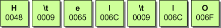
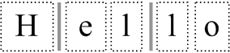
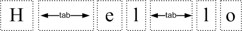
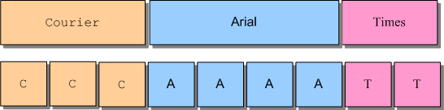
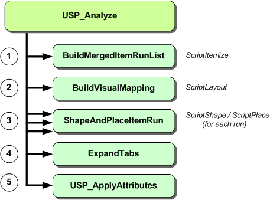

More Uniscribe Mysteries
Uniscribe Mysteries continued…
前回のチュートリアルの続きで、Uniscribe APIの詳細を見ていきます。前回の一連の流れでは、Unicodeテキストの文字列を複数のアイテムランに分割するところまでたどり着きました。以下、ここまでの手順をご紹介します。
- ScriptItemize - 文字列を個別のスクリプトまたは「アイテムラン」に分割します。
- アイテムのランと、アプリケーションで定義された「スタイル」のランをマージして、よりきめ細かいアイテムを作成。
- ScriptLayout - アイテムの順番を変えることができます。
この作業の結果、ITEM_RUN 構造体の配列（itemRunList と呼ばれる）とビジュアルロジカルマッピング配列（visualToLogicalList と呼ばれる）が作成されました。これらの配列は両方とも USPDATA オブジェクトの中に格納されています。
struct USPDATA
{
...
ITEM_RUN * itemRunList;
int itemRunCount;
int * visualToLogicalList;
...
};
次の作業は、各アイテムランを順番に処理して、（ScriptTextOutを使って）実際にテキストをレンダリングできるようにするところまでです。これには、2つの密接に関連したUniscribe関数（ScriptShapeとScriptPlace）を各ランで呼び出す必要があります。以下は、これから実行する手順です。
- ScriptShape - 文脈に応じたシェーピング動作を適用し、各ランの文字を一連のグリフに変換します。
- ScriptPlace - ランの各グリフの幅と位置を計算する。
- 個々のグリフにカラーリング／ハイライトを施す。
- ScriptTextOut - グリフを表示します。
4. ScriptShape
Uniscribe の関数の中で、ScriptShape はおそらく最も重要なものです。この関数の目的は、Unicode の文字列を一連のグリフに変換して表示できるようにすることです。ScriptShape は、GetCharacterPlacement API で提供されている機能に取って代わるものですが、返すデータのタイプは非常に似ています。
ScriptShapeはかなり複雑な関数です。SCRIPT_ITEM / ITEM_RUN構造体によって識別される）テキストの単一ランと、各アイテムランに関連するSCRIPT_ANALYSIS構造体を入力として受け取ります。
HRESULT WINAPI ScriptShape(
HDC hdc,
SCRIPT_CACHE * psc,
const WCHAR * pwsChars, // in
int cChars,
int cMaxGlyphs,
SCRIPT_ANALYSIS * analysis, // in
WORD * pwOutGlyphs, // out - array of glyphs
WORD * pwLogClust, // out - glyph cluster positions
SCRIPT_VISATTR * psva, // out - visual attributes
int * pcGlyphs // out - count of glyphs
);
この関数を呼び出すと、さまざまな情報が表示されます。それぞれのパラメータが何を表しているのか、順に見ていきましょう。
- pscは、SCRIPT_CACHEオブジェクトへのポインタです。このオブジェクトは、ScriptShapeが最初に呼び出される前にNULLに初期化されていなければなりません。
- pwsCharsとcCharsは、現在のランを構成する（元の文字列の）Unicodeテキストの範囲を特定します。
- analysisは、各ランのSCRIPT_ANALYSIS構造体へのポインタです。
- pwOutGlyphs[]はWORD値のバッファで、ランを構成する「グリフインデックス」を受け取ります。グリフインデックスとは、特定のフォントに固有の値であり、そのフォント内の特定のグリフイメージを識別するための値です。pwOutGlyphsバッファのサイズは、cMaxGlyphsパラメータで指定する必要があります。ScriptShapeが戻るときには、pwOutGlyphsに格納されているアイテムの数が*pcGlyphsで返されます。
- psva[]は、SCRIPT_VISATTR構造体のバッファを指します。この配列はグリフリスト(pwOutGlyphs)と並行して実行されるので、同じサイズを割り当てる必要があります。ScriptPlaceへの必須入力であること以外に、SCRIPT_VISATTR情報の使い道は今のところありません。
- pwLogClust[]はWORD値の配列である。つまり、pwLogClust の各要素は原文の文字位置に正確に対応しています。このことは、pwLogClust のバッファサイズがテキストの長さと同じでなければならないことを意味しています - 正確には cChars 単位の長さです。
ここで最も重要なパラメータはpwLogClust[]配列で、その内容は論理的な文字位置とグリフクラスターの位置を対応させるのに使われます。この配列については、次のチュートリアルでさらに詳しく説明します。
Font Fallback
大多数のフォントは、Unicodeで定義された文字の全範囲に対応していません。実際、Unicodeのすべての文字や言語を表示できるフォントを私は知りません。最も近いものとしては、Microsoft OfficeのCDに収録されている「Arial Unicode MS」がありますが、このフォントでも55,000字程度しか表示できません。フォント内のグリフが欠けていると、通常は（常にではありませんが）小さな四角いボックスが表示されます。
アプリケーションは通常、Unicodeスクリプトタイプごとに特定のフォントを利用することでこの問題を解決します。このプロセスは「フォントフォールバック」と呼ばれ、（テキストエディタなどの）主要な表示フォントに、文字列内のすべての文字を表示するのに適切なグリフが含まれていない場合に実装されます。内部のルックアップテーブルから「バックアップフォント」が検索され、そこから必要なグリフをプライマリフォントに欠けているグリフの代わりに代用することができます。
フォント・フォールバックは、低レベルの Uniscribe API では処理されません - ScriptString API だけがこの機能を持っています。したがって、すべてのUniscribeベースのアプリケーションは、代替フォントの組み込みリストを持つことが要求されます。このような理由から、私はUspLibにFont-fallbackを実装しないことにしました。代替フォントは、各行のテキストを分析する際に、ATTRスタイルランで指定することができます。
5. ScriptPlace
ScriptPlaceは、ScriptShapeの出力（glyph-index-listとSCRIPT_VISATTR list）を受け取り、グリフの送り幅の情報を生成します。前進幅とは、あるグリフから次のグリフまでのピクセル単位のオフセットのことです。この情報は整数の配列（piAdvance）で返され、テキストを表示する際の出力座標の位置決めや、マウスヒットテストに使用することができます。
HRESULT WINAPI ScriptPlace(
HDC hdc,
SCRIPT_CACHE * psc,
WORD * pwGlyphs, // in - the results from ScriptShape
int cGlyphs, // in - number of glyphs in pwGlyphs
SCRIPT_VISATTR * psva, // in - from ScriptShape
SCRIPT_ANALYSIS * analysis, // in - from the ITEM_RUN
int * piAdvance, // out - array of advance widths
GOFFSET * pGoffset, // out - array of GOFFSETs
ABC * pABC // out - pointer to a single ABC structure
);
ScriptPlaceは、（ScriptShapeのように）WCHAR文字のバッファを入力として受け取るのではなく、ScriptShapeが生成したグリフインデックスのバッファを必要とします。注目のパラメータは
- pwGlyphs[]（および対応するcGlyphs）は、ScriptShapeが返すグリフの配列と同じです。
- psva []は、ScriptShapeが返すSCRIPT_VISATTRの配列です。
- piAdvance[]は整数のバッファを指しており、このバッファには実行時のアドバンス幅のリストが入ります。pwGlyphsの各グリフに対して、piAdvanceには1つのエントリがあります。したがって、piAdvance配列はpwGlyphsと同じサイズに割り当てる必要があります。
- pGoffset[]は、GOFFSET構造体のバッファを指します。これらの構造体は、表示されるべき各グリフのオフセットを識別します。MSDNでは、このパラメータを1つのGOFFSET構造体として紛らわしく記述していますが、pGoffsetもpwGlyphs配列と同じ長さに割り当てる必要があります。
最後に、アイテムランの幅は、pABCパラメータで指定されたABC構造で表されます。各ランの幅の合計は、以下の式で計算できます。
runWidth = abc.abcA + abc.abcB + abc.abcC;
なお、同じ値は、piAdvance配列のすべての整数を合計しても算出できます。
for(i = 0; i < uspData->itemRunCount; i++)
ShapeAndPlaceItemRun(hdc, &uspData->itemRunList[i]);
ScriptPlaceはScriptShapeの結果に非常に依存しているため、通常、この2つの関数は一緒に呼び出され、ラッパー関数で分離されています。ShapeAndPlaceItemRun関数はそのために使用され、文字列内の各item-runに対して1回ずつ呼び出されます。
Tab Expansion
Uniscribeでは、内蔵のサポートがないにもかかわらず、タブの扱いはとても簡単です。理解していただきたいのは、元のテキスト文字列に含まれるどのような文字も、ScriptShape が呼び出された後は常に少なくとも 1 つのグリフで表現されるということです。これは、キャリッジリターンやスペースなどの表示できない制御文字や、もちろんタブ文字にも当てはまります。
このアイデアを説明するために、2つのTAB文字が埋め込まれている文字列 "Hello "を例に挙げます。
">
下の表は、このテキスト文字列に対してScriptShapeとScriptPlaceを呼び出した結果です。
| Array | [0] | [1] | [2] | [3] | [4] | [5] | [6] |
| pwGlyphs[] | 43 | 3 | 72 | 79 | 3 | 79 | 82 |
| piAdvance[] | 165 | 0 | 102 | 64 | 0 | 64 | 115 |
タブ文字はどちらもグリフインデックスが「3」で表されていることに注目してください。このグリフインデックスは、特定のフォントに対してのみ有効ですが、「非表示」グリフ、つまり視覚的に表現されていないグリフを表しています。さらに興味深いのは、これらの「見えない」グリフの結果としての幅であり、これは最初はゼロ「0」に設定されている。
この段階になってからの通常の行動は、上で示した生成された幅とグリフを使ってScriptTextOutを呼び出すことです。その結果、以下のようになります。
">
点線は、それぞれのグリフが独立した存在であるというコンセプトを伝えるために使用されています。また、2本の縦棒にも注目してください。これは（現在）ゼロ幅のタブ文字を表していると思われます。
">
タブ拡張のプロセスは簡単です。必要なのは、幅リスト内のタブの個々の幅エントリを変更することだけです。これを行うと、すべての描画とマウスヒットテストは修正されたグリフ幅を使用し、その結果、タブ文字があった場所に余分なスペースが割り当てられます。
タブの展開は当然、ScriptShapeとScriptPlaceが呼び出された後に行われなければなりません。すべてのアイテムランがこのように処理された後、UspAnalyzeは別の内部関数であるExpandTabsを呼び出します。
BOOL ExpandTabs(USPDATA *uspData, WCHAR *wstr, int wlen, SCRIPT_TABDEF *tabdef);
SCRIPT_TABDEFは、ScriptStringAnalyzeで使用される標準的なUniscribe構造体です。これは、文字列のタブストップに関する情報（サイズと位置）を含んでいます。UspLibでは、一貫性を保つためにこの同じ構造体を使用しています。
Applying Attributes
UspLibは、ATTR構造体の配列を使って、Unicodeテキストの文字列をスタイリングする際に、可変長のアトリビュートランをサポートしています。Neatpadはこの機能を利用していませんが（各ATTRを「1」単位の長さに設定するだけ）、可変長のランを指定できる可能性はあります。
">
これ自体は問題ではありませんが、グリフのランを表示するのと同時に可変長のスタイルランを処理すると、非常に複雑になります。この問題を解決するために、UspLibはユーザーが提供した属性ランを常にフラット化し、USPDATAオブジェクト内に内部コピーを保持します。フラット化されたランリストは、元のUnicode文字列と同じ長さに割り当てられ、元のUnicode文字1つにつきちょうど1つのATTR構造を含んでいます。
UspApplyAttributes(USPDATA *uspData, ATTR *attrRunList)
UspApplyAttributes（上記）は、USPDATAオブジェクトに属するスタイルラン情報を更新するために使用され、文字列解析プロセスの一部としてUspAnalyzeによって呼び出されます。しかし、この関数は、文字列が解析された後、いつでも呼び出すことができます。フォント情報を再適用すると、文字列全体を再分析する必要があるため、UspApplyAttributesの以降の呼び出しでは、色情報のみが更新されることに注意してください。
UspAnalyze
これで、UspAnalyzeの実装を完了するのに十分な範囲をカバーしました。この解析フェーズの関連コードはすべてUspLib.cファイルにあります。解析の機能的な内訳を以下に示します。
">
これらの作業の結果、1つのUSPDATAオブジェクトには、Unicodeテキストの文字列を表示するために必要な情報がすべて含まれています。
typedef struct _USPDATA
{
//
// Item-run information
//
int itemRunCount;
ITEM_RUN * itemRunList;
int * visualToLogicalList;
//
// Logical character/cluster information (1 unit per original WCHAR)
//
int stringLen; // length of current string (in WCHARs)
WORD * clusterList; // logical cluster info
ATTR * attrList; // flattened attribute-list
//
// Glyph information for the entire paragraph
// Each ITEM_RUN references a position within these lists:
//
int glyphCount; // count of glyphs currently stored
WORD * glyphList;
int * widthList;
GOFFSET * offsetList;
SCRIPT_VISATTR * svaList;
//
// external, user-maintained font-table
//
USPFONT * uspFontList;
} USPDATA, *PUSPDATA;
上記のリストはUSPDATAの構造の詳細を示しています。ここでは、わかりやすくするために、必要のないいくつかの「ハウスキーピング」フィールドを省略しています。
Uniscribeを扱う上での大きな困難の一つは、生成される膨大な量の情報をどうすればいいのかということです。UspLibで私がとった戦略は、すべての情報をUSPDATAオブジェクト内に保持することです。ランごとの」グリフ情報は、いくつかの大きなバッファ（glyphList、widthListなど）に連結されます。各ITEM_RUNは、ITEM_RUN::glyphPosとITEM_RUN::glyphCountフィールドを使用して、これらの大きなバッファ内のデータの特定の範囲を参照します。
Uniscribeには、基本的に2つのアプローチがあり、スピード対メモリー消費に分類されます。第一の戦略は、Uniscribe APIによって生成されたすべての情報をひとつのオブジェクトに集めることである。これには、「分析」フェーズ（項目化、整形など）が一度だけ行われるため、動作が速いという利点があります。この後、グリフデータは保存され、テキストが表示されるたびに再利用されます。
もうひとつの方法は、必要なときだけバッファを確保し、グリフ情報が必要になるたびに ScriptShape/Place を繰り返し呼び出すことでメモリを節約する方法です。メリットはすでに述べたとおりですが、デメリットはパフォーマンスの低下です。アイテムランを表示するたびに再形成すると、かなり遅くなります。テキストエディタでは、マウスの選択が変わるたびに表示を再描画する必要があることを考えると、この方法は避けたいところです。
UspLibでは、スピード（リソースヘビー）なアプローチを選択しました。
Coming up in Part 14
まだテキストが描かれていませんが、そう遠くないうちに描かれることでしょう。次のチュートリアルでは UspTextOut 関数に焦点を当て、ScriptShape や ScriptPlace からの出力を受けて USPDATA オブジェクトに格納されている属性ランを適用することで、スタイルのある Unicode テキストを表示する方法を説明します。